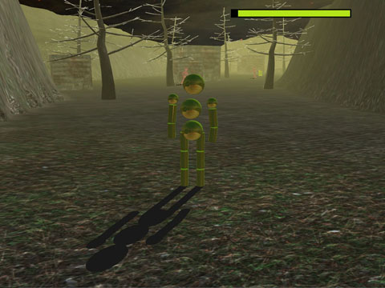
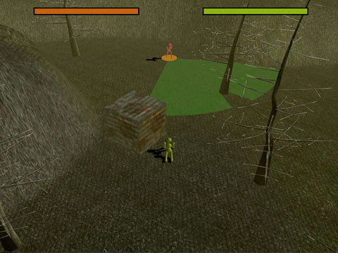
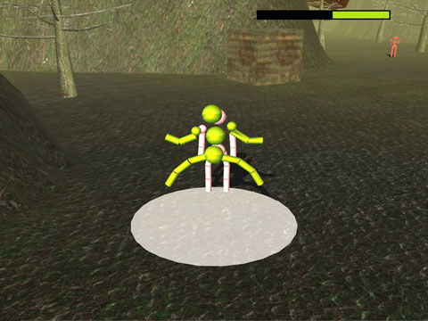
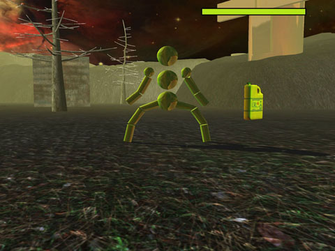
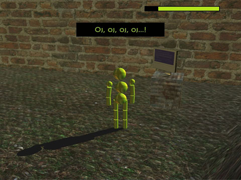
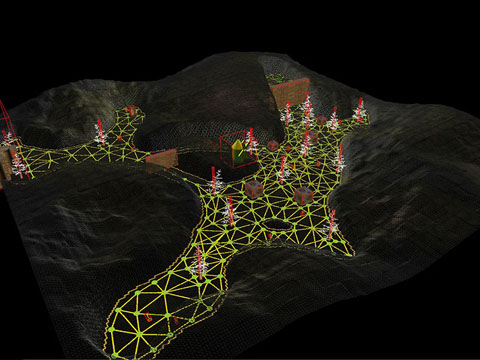
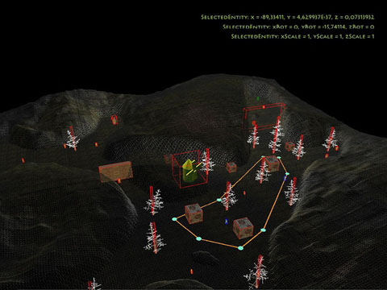

Exnihilo is a tactical, stealth-oriented TPP game, inspired by a Commandos series, where a player is challenged to cross a map without alerting guards. The project was written in C# using XNA 3.1 framework in cooperation with Michał Niewiadomski, who designed gameplay rules.
The main implementation focus was put on player-enemy interations. Enemy behavour is modeled using FSM. The pathfinding is based on static node graph. The game includes a in-game map editor.
A few years later I reimplemented parts the project with XNA 4. I created a more intuitive character controller, added snow particles with snow accumulation. I also implemented dual paraboloid shadowmaps for point lights support, which replaced older, plane-projected shadows. Unfortunatelly, short after that Microsoft abandoned XNA which made me put off this project into the drawer. It would be nice to rewrite it in more durable technology some day.